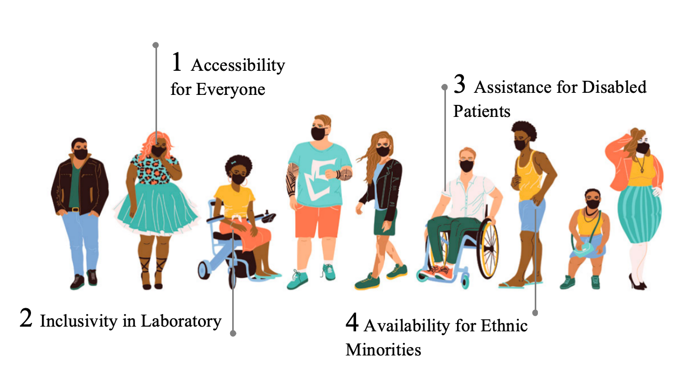
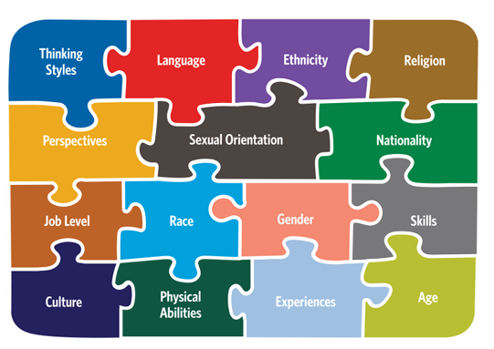
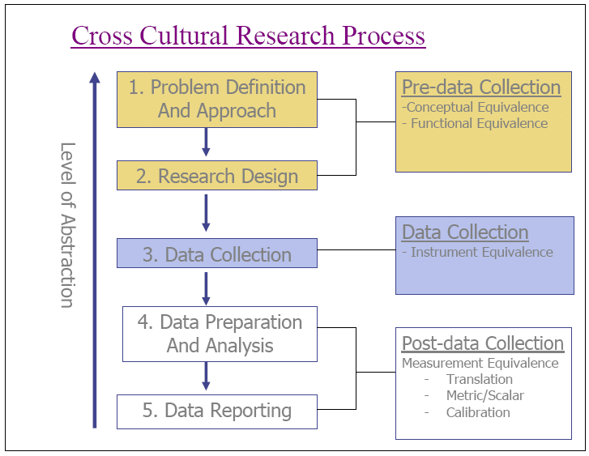
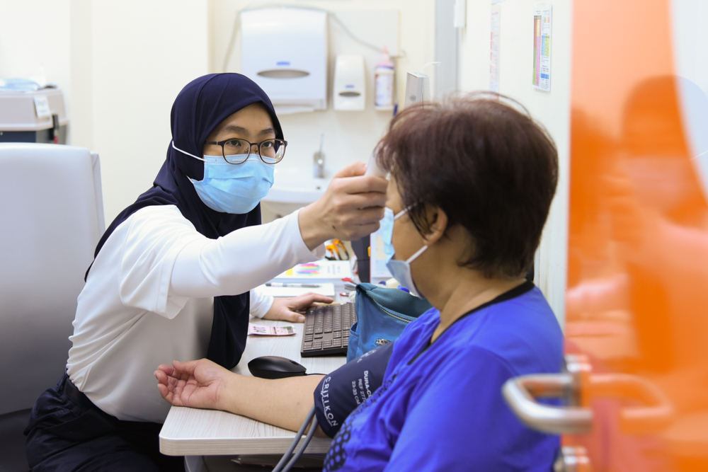
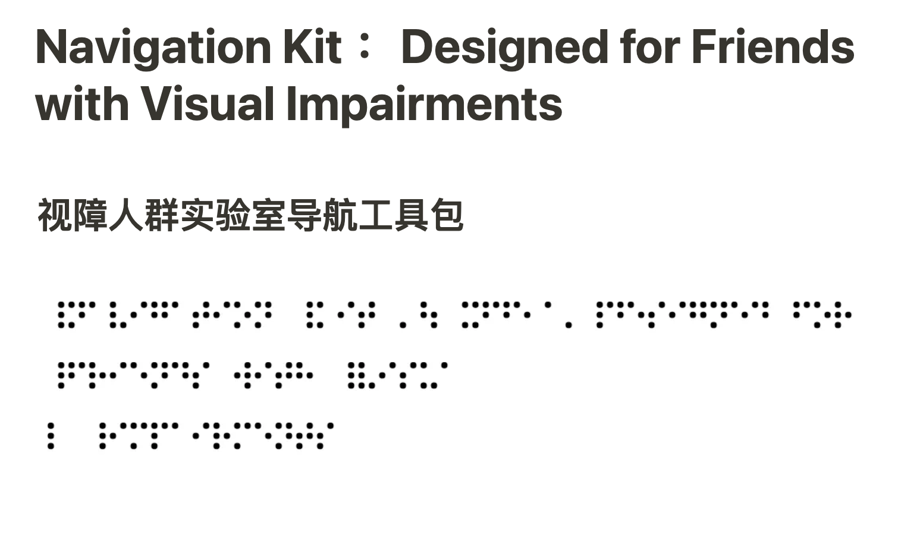
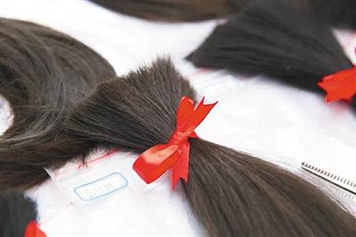
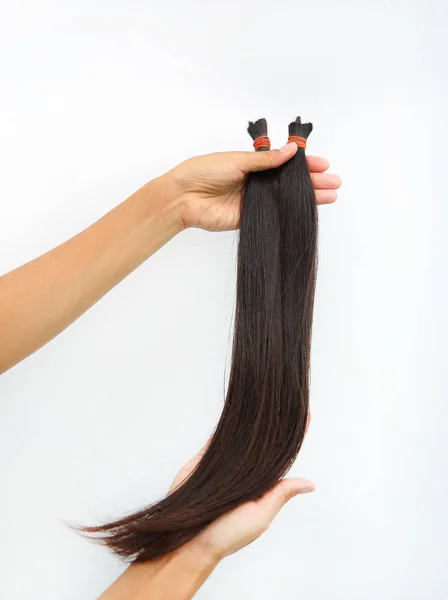
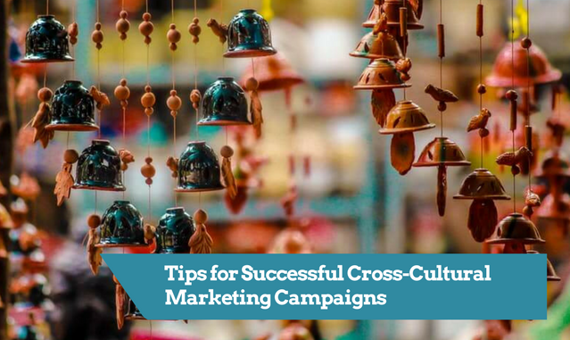

Loading...

MEDUSA's Embrace
In this inclusive fight, new hope still grieves.
In this arduous journey to restore the glory of tresses, I proclaim the virtue of inclusivity. For hair loss spares no one, be they young or old, rich or poor, of any race or creed. It is a shared woe that binds us all. And so, I invite each and every one of you to join me in this inclusive crusade, where no soul is left behind in the quest for luscious locks.

Outline

Accessibility for Everyone
Minorities

In our anti-hair loss project, we are committed to reaching out to various minorities. We understand that different ethnic and cultural groups may have unique hair characteristics and needs. Therefore, we conduct extensive research to understand the specific hair problems faced by minorities. Through community engagement and collaboration with local organizations, we aim to gather first-hand information. For example, we can hold focus groups with representatives from different minority communities to discuss their concerns and expectations regarding hair loss treatments. This will help us tailor our product and marketing strategies to better serve these groups.
Cultural Research

We can initiate in-depth studies into the haircare traditions and beliefs of various minorities. For instance, among some African ethnic groups, natural haircare plays a significant role, and their hair textures may differ from the general population. By understanding these nuances, we can better address their specific needs and concerns related to hair loss.
Collaborate with anthropologists and cultural experts who have knowledge about different minority cultures. They can provide valuable insights into the social and cultural aspects of hair within these communities, helping us to avoid any cultural misunderstandings or insensitivities in our product development and marketing.
Community Engagement

Organize periodical community events in minority neighborhoods or areas where they are concentrated. These events can include free hair health check-ups and consultations. Our team of volunteers can provide on-site advice and answer questions about hair loss prevention and treatment options available.
Establish partnerships with local community centers, schools, and religious institutions. Through these partnerships, we can distribute educational materials about hair health and our project in languages and formats that are accessible to the community members. For example, creating pamphlets in multiple languages with simple illustrations and explanations.
Inclusivity in Laboratory
Physical Accessibility
If possible, install automatic doors and wide corridors to ensure easy wheelchair access throughout the laboratory. The flooring should be non-slip and smooth to facilitate movement for those with mobility aids. Redesign workstations at adjustable heights to accommodate different sitting or standing positions. Provide ergonomic chairs and footrests that can be customized to fit the individual needs of disabled laboratory staff.
Equipment Adaptation
Equip microscopes and other instruments with alternative control mechanisms such as touchscreens or voice-activated commands. This allows visually impaired or physically disabled researchers to operate the equipment independently. Ensure that all laboratory tools have clear markings and labels in braille or large print for those with visual impairments. Additionally, color-coding can be used to distinguish different types of equipment or substances, making it easier for everyone to identify them quickly.
Training and Support
Develop specialized training programs for disabled laboratory personnel. These programs can include one-on-one tutoring on laboratory techniques and safety protocols. For example, providing extra training time and resources for those who may need it due to physical limitations. Create a buddy system where experienced laboratory staff are paired with new or disabled colleagues. This provides ongoing support and assistance in daily laboratory tasks and helps to build a sense of community within the laboratory.
Ensuring a Vision

In Zhejiang University, we are committed to creating an inclusive laboratory environment for visually impaired students and researchers. This effort is vital for promoting diversity and equal access to scientific exploration within the academic community. By implementing specific measures, we aim to empower visually impaired individuals to engage in laboratory work with confidence and independence.
To achieve this goal, we have developed a comprehensive system for recording laboratory equipment and supplies. Firstly, all the major laboratory instruments such as spectrometers, centrifuges, and microscopes are labeled with high-contrast tactile labels in addition to Braille. These labels not only provide the name of the equipment but also include brief instructions on their basic functions and operation steps. For example, on the centrifuge label, it indicates the maximum speed range and the procedure for setting the desired speed in both Braille and a raised tactile pattern that can be easily felt.
Assistance for Disabled Patients
Product Usage Support
Develop a mobile application with step-by-step video tutorials demonstrating how to apply the soluble microneedle patch. The app can include features like voice guidance and slow-motion playback for those with cognitive or physical disabilities. Provide home visits by trained healthcare professionals for patients who have difficulty understanding or applying the product on their own. These professionals can offer hands-on assistance and ensure that the patient is using the product correctly and safely.
Cancer Patients Initiative


Work with hospitals and cancer treatment centers to identify cancer patients who are experiencing hair loss. Set up a referral system where oncologists can recommend our free wig service to their patients. Offer a variety of wig styles and colors to match the diverse preferences of cancer patients. Provide customization options such as adding bangs or changing the length of the wig to make it look more natural and comfortable for the wearer.
Whatsmore, we could organize support groups for cancer patients dealing with hair loss. These groups can meet regularly, either in person or online, to share experiences and provide emotional support. Our team can also participate in these groups to offer advice on hair care during and after cancer treatment.
Availability for Ethnic Minorities
Multilingual Packaging and Manuals
Translate the product packaging and user manuals into multiple minority languages. Use professional translators who are native speakers of the target languages to ensure accurate and culturally appropriate translations. Include cultural references and symbols in the packaging and manuals that are relevant to the specific ethnic minority. For example, for Hispanic communities, we could incorporate traditional Mexican or Spanish motifs that are associated with beauty and health.
Cultural Marketing Campaign

Collaborate with local artists and designers from ethnic minority backgrounds to create marketing materials. These materials can include posters, brochures, and online advertisements that feature diverse models and cultural elements that resonate with the target community. Use social media platforms popular within ethnic minority communities to promote our product. Create engaging content such as before-and-after transformation stories of individuals from the community who have used our anti-hair loss treatment.
Product Customization
Conduct research on the hair types and scalp conditions of different ethnic minorities. Based on the findings, develop customized formulations of our product. For example, for Asian ethnic groups with typically thicker hair, we may need to adjust the concentration of the active ingredients to ensure better penetration and effectiveness. Consider packaging the product in sizes and shapes that are more convenient and familiar to different ethnic minorities. For example, for some African communities where larger family sizes are common, we could offer family-sized packages at a more affordable price.